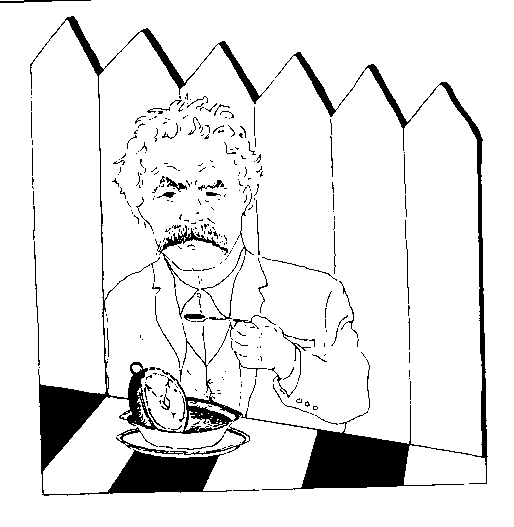

SOUPSONG HAS GONE HARDCOPY!
Buy one (or more) at amazon.com or barnesandnoble.com.
Release date: 12/28/2004.
* * *Click HERE to register your comments...or improve the recipe.Or do you want to take another look at the homepage MENU?
Or do you want to SEARCH for something specific?
Or do you want to take another look at the homepage MENU?
Or do you want to SEARCH for something specific?
American Bean Soup
It's a main course, often with internal consequences--which, presumably, is one of the reasons that it's as American as can be. Serve hot to 2-3 people.
SoupTale: Barometer Soup...by Mark Twain, A Tramp Abroad

"I know, by my scientific reading, that either thermometers or barometers ought to be boiled, to make them accurate; I did not know which it was, so I boiled both. There was still no result.
...I hunted up another barometer; it was new and perfect. I boiled it half an hour in a pot of bean soup which the cooks were making. The result was unexpected: the instrument was not affected at all, but there was such a strong barometer taste to the soup that the head cook, who was a most conscientious person, changed its name in the bill of fare. This dish was so greatly liked by all, that I ordered the cook to have barometer soup every day."
- 1/2 cup dried common white beans
- a small piece of salty ham, ham bone, or bacon
- 4 cups boiling water
- 1 bay leaf
- 1/4 teaspoon white peppercorns
- 3 whole cloves
- 1 carrot, diced
- 3 celery stalks, with leaves, chopped
- 1 onion, chopped
- 2 garlic cloves, minced
- 1 potato, grated
Soak the beans overnight, then discard water. Put beans, ham/bacon, boiling water, bay leaf, pepper, and cloves in a pot and cook slowly until the beans are soft, about 2-3 hours. Add the carrots, celery, onion, garlic, and grated potato and cook 30 more minutes.
Remove the meat and shred. Put the soup through a food mill or processor. Thin, if you like, with water or milk. Correct seasoning. Ladle into bowls and top with croutons and parsley.